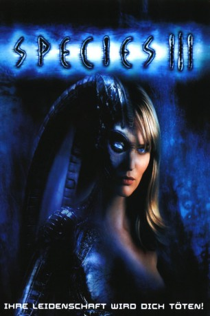

#9012 Species III
 
 IMDB-Wertung: 4.2 / 10
IMDB-Wertung: 4.2 / 10  Tomatometer: 33
Tomatometer: 33  Metascore: 0
Metascore: 0 
Kurz vor ihrem Tod schenkt die Mensch-Alien-Kreatur Eve einer Tochter das Leben: Sara. Der Wissenschaftler Dr. Abbott versteckt Sara in seinem Laboratorium. Besessen von der Idee, eine neue, perfekte Rasse zu züchten, braucht er Saras perfekten Organismus. An den wollen allerdings auch eine ganze Horde von Alien-Mischlingen aus den früheren Sexabenteuern der mörderischen Species-Kreaturen ran, weil sie an einem tödlichen Immundefekt leiden. Und so nimmt das Unheil seinen Lauf, zudem Abbotts gutaussehender Assistent Dean mehr und mehr Abscheut gegen die Experimente an der attraktiven Sara entwickelt...
Jahr: 2004
Dauer: 107 Minuten
FSK: 16
Land: USA Studio: MGM Home EntertainmentTonspuren: DD5.1 - ,
Untertitel:
Auflösung: 1080p (1920x1080) Größe: 9195 MB
Genre: Horror, Sci-Fi
Regisseur: Brad Turner
Drehbuch: Dennis Feldman
Soundtrack: Elia Cmiral
Darsteller:
- Robin Dunne als Dean
 Robert Knepper als Dr. Abbot
Robert Knepper als Dr. Abbot- Sunny Mabrey als Sara
- Amelia Cooke als Amelia
- John Paul Pitoc als Hastings
 Michael Warren als Agent Wasach
Michael Warren als Agent Wasach Christopher Neame als Dr. Nicholas Turner
Christopher Neame als Dr. Nicholas Turner- Patricia Bethune als Colleen
- Joel Stoffer als Portus
- James Leo Ryan als Yosef
 Natasha Henstridge als Eve
Natasha Henstridge als Eve- Reed Frerichs als ISD Staffer
- Marc D. Wilson als Crew Chief
- Matthew Yang King als Specialist Robert Kelley
 Jim Cody Williams als Farmer at Gas Station
Jim Cody Williams als Farmer at Gas Station- Mark Zecca als Tour Guest
- Sean C. Ching als Grad Student
- Dan Wells als Jake
- Frank Crim als Communications Officer
 Boni Yanagisawa als Female Student
Boni Yanagisawa als Female Student Carl Ciarfalio als Security Guard #2
Carl Ciarfalio als Security Guard #2 Troy Blendell als Autopsy Tech
Troy Blendell als Autopsy Tech- Kari Ann Peniche als Cheerleader (uncredited)
- Jason Sarcinelli als Adult Male Alien (uncredited)
- Marc Scizak als Football Player (uncredited)
- Savanna Fields als Young Sara
- Christopher R. Gillum als Young Portus
- Billy Bacon als Commander
- Rick Dean als Cobb the Gas Station Guy
- Rob Hinderstein als Security Guard #1
- Josh Cook als Jock (uncredited)
- Joss Gomez als Student (uncredited)
Datei: X:\4-Tetralogie(M-Z)\Species\Species III (2004, FSK16, 1920x1080).mkv seit 18.05.2018
Festplatte: HD Collection-3(N-Z)-6(A-Z)
 Es gibt insgesamt 7 Filme in der Gruppe '4-Tetralogie(M-Z)\Species'
Es gibt insgesamt 7 Filme in der Gruppe '4-Tetralogie(M-Z)\Species'